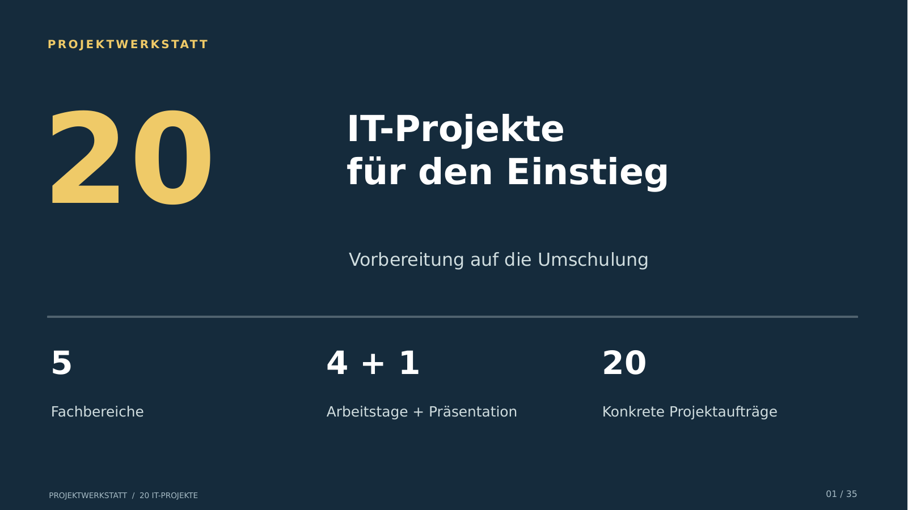

Projektwerkstatt · Vorbereitung auf die Umschulung
20 IT-Projekte für den Einstieg
Die Übersicht zum Projektkatalog: Python, Webentwicklung, FILIUS, Kundensupport und IT-Sicherheit. Mit Pflichtfunktionen, Abnahmetests und Hinweisen zu Planung, Dokumentation und Präsentation.
35 Folien20 Projektaufträge5 FachbereicheSprache: Deutsch

Grundlage: „Projektkatalog - 20 IT-Projekte.docx“. Die Übersicht stellt den gesamten Katalog vor. Die Empfehlung von 6–8 Folien im Katalog gilt für die spätere Präsentation eines einzelnen Teilnehmerprojekts.